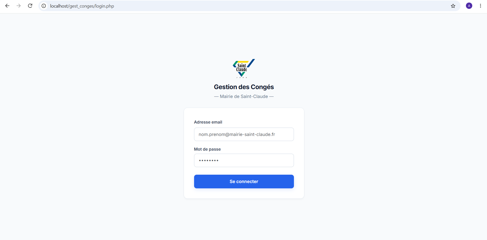
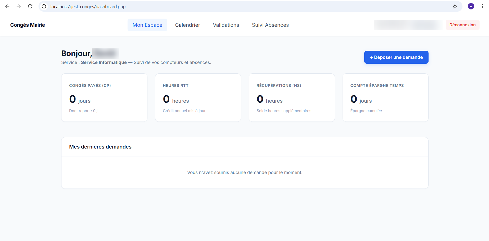

GestConges
Application de gestion des congés des agents de la mairie


Contexte & objectifs
Le service avait besoin d'un outil pour centraliser les demandes de congés et leur validation, en remplacement d'un suivi papier ou tableur. L'objectif était un système multi-rôles, du dépôt de la demande par l'agent jusqu'à la validation finale.
Fonctionnalités principales
- Espace personnel avec les compteurs de congés de chaque agent
- Dépôt de demandes de congés, en demi-journées
- Calendrier des absences (FullCalendar)
- Circuit de validation et suivi des absences pour les responsables
- Navigation et droits adaptés à 5 rôles : agent, responsable, RH, DGS, admin
Technologies utilisées
PHP natif et MySQL, avec FullCalendar pour l'affichage du calendrier. Accès à la base
via une fonction getDB() centralisée et une configuration par constante
APP_URL. Interface en CSS personnalisé.
Difficultés & solutions
Gérer 5 rôles avec un affichage et des droits propres à chacun : la navigation et le filtrage des données dépendent du rôle de l'utilisateur connecté. Le calcul des congés a aussi demandé plusieurs itérations : une première version basée sur les heures, trop complexe à maintenir, a été remplacée par un système en demi-journées, plus simple et plus fiable.